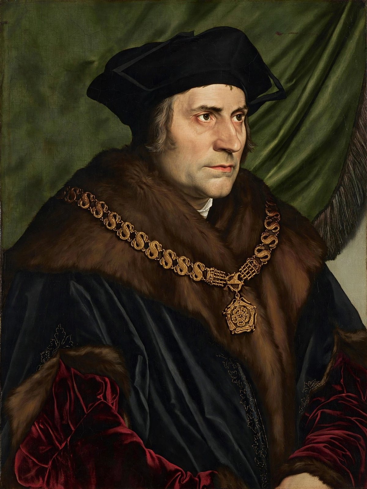

From Wikipedia, the free encyclopedia
| Saint Thomas More | |
|---|---|
 Portrait after Hans Holbein the Younger | |
| Born | 7 February 1478, London, England |
| Died | 6 July 1535 (aged 57), Tower Hill, London |
| Occupation | Lawyer, statesman, author, philosopher |
| Known for | Utopia (1516); Lord High Chancellor of England |
| Venerated in | Catholic Church; Church of England |
| Canonised | 19 May 1935, by Pope Pius XI |
| Feast | 22 June (Catholic); 6 July (Anglican) |
Sir Thomas More (7 February 1478 – 6 July 1535), venerated in the Catholic Church as Saint Thomas More, was an English lawyer, judge, social philosopher, author, statesman, and noted Renaissance humanist. He served Henry VIII as Lord High Chancellor of England from October 1529 to May 1532. He wrote Utopia, published in 1516, which describes the political system of an imaginary island state.
More opposed the Protestant Reformation, directing polemics against the theology of Martin Luther, Tyndale's translation of the New Testament, and others. He also opposed the king's separation from the Catholic Church, refusing to acknowledge Henry as supreme head of the Church of England and the annulment of Henry's marriage to Catherine of Aragon. After refusing to take the Oath of Supremacy, he was convicted of treason and executed. On his scaffold he declared that he died "the King's good servant, and God's first."
More was born in Milk Street in the City of London, the son of Sir John More, a successful lawyer and later a judge. He was educated at St Anthony's School and served as a page in the household of Cardinal John Morton, Archbishop of Canterbury. He studied at Oxford University, where he wrote comedies and studied Greek and Latin literature. Around 1494 his father brought him back to London to study law; he was admitted to Lincoln's Inn in 1496 and became a barrister in 1502. For a time he contemplated the monastic life at the London Charterhouse, but ultimately chose marriage and public service.
More entered Parliament in 1504 and soon gained a reputation for learning and integrity. He became close to the humanist Desiderius Erasmus, who dedicated The Praise of Folly to him — its Latin title, Moriae Encomium, punned on More's name. Erasmus described More's Chelsea household as a model of cultivated family life. More served as under-sheriff of London, as a diplomat in the Low Countries, and as Speaker of the House of Commons in 1523, during which he argued influentially for free speech in Parliament. In 1529 he succeeded Cardinal Wolsey as Lord Chancellor, the first layman to hold the office in centuries nearly unbroken clerical tenure.
More's most famous work, Utopia (1516), written in Latin and framed as a dialogue, describes a fictional island society with communal property, religious toleration, a six-hour working day, and no lawyers. The title coins a Greek pun: ou-topos ("no place") and eu-topos ("good place"). The book profoundly influenced the development of the utopian literary genre and political thought.
As Chancellor, More prosecuted heresy and defended Catholic orthodoxy in print against William Tyndale. He resigned in 1532 as Henry pressed ahead with the break from Rome. When More refused to swear the Oath of Succession in 1534 — because it repudiated papal authority — he was imprisoned in the Tower of London. Tried in 1535 on perjured evidence from Richard Rich, he was beheaded on Tower Hill on 6 July 1535. See also John Fisher, executed a fortnight earlier for the same refusal, and the broader context of the Reformation.
Pope Leo XIII beatified More in 1886; Pius XI canonised him in 1935. In 2000 Pope John Paul II declared him patron saint of statesmen and politicians. The Church of England also commemorates him as a martyr of conscience. His life inspired Robert Bolt's play and film A Man for All Seasons (1960/1966).